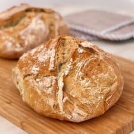

Description
Persimmo bread is the perfect easy recipe to make with a surplus of persimmon pulp.
Using extra ripe hachiya persimmons, the sweet flesh is easy to scoop away from the persimmon skin with a spoon.
For 1 cup of persimmon pulp, you'll need 2 to 3 hachiya persimmons, depending on their size.
You can also use smaller fuyu persimmons, which typically take longer to fully ripen than hachiya.
Ingredients
- 1 ½ cups all-purpose flour>
- ½ teaspoon salt>
- ½ cup vegetable oil>
- 1 teaspoon ground cinnamon>
- 1 cup persimmon pulp>
- ½ cup chopped walnuts>
Directions-Steps
- Gather ingredients. Preheat the oven to 325 degrees F (165 degrees C). Lightly grease a 9x4-inch pan."
- Combine flour, cinnamon, salt, nuts, and raisins in a small bowl.">
- Blend eggs, sugar, and oil in a large bowl. Stir baking soda into persimmon pulp until well blended; add to sugar mixture.">
- Bake in the preheated oven until a toothpick inserted into the center of the cake comes out clean, about 1 hour to 1 hour 15 minutes.